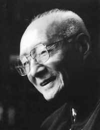

返回主页
李赋宁《英语史》

历史（Philology/Geschichte/HiStory Telling）就是语言的不断改变。
语言是思考（理智）的工具。
人类一思考，上帝就发笑（Man Thinks, God Laughs）。
或者说，语言是自我实现的预言（Self-fulfilling Prophecy）。
《赫敏（Hermione Granger）为什么不能嫁给哈利 波特（Harry Potter）》
李赋宁先生再谈英语学习
1、加强中学英语教学，其他课程主动配合。旧时代的某些经验仍有借鉴的价值。我的母校天津南开中学，从初一开始，数学课的教科书一律附有英文数学术语，数学老师要附带教给学生，并在考试中加以检查，日常讲课时随时自然运用英文术语。初三的平面几何课直接采用英文教科书，老师用英语讲授几何学，学生用英文解几何习题。这一切都来得自然，毫不费力。高中的数、理、化、生和世界史、地理课，无不采用英文教科书。学生的习题、实验报告、读书笔记也都要求用英文写，不知不觉也就为大学的不同专业打下了初步的英文基础。当前的困难是缺少既懂专业又懂英语的各门课的师资。不妨在少数中学试点，并积极为大多数中学准备合格的师资条件。
（数学英语，用英语思考）学汉语十二年Aesthetics & Calisthenics: Touretski Popov, Convict Conditioning & 句读之不知 背诵 Music
2、加强大学各专业课程的英文教科书、参考书、工具书、期刊的阅读和用英文做读书札记，写读书报告或内容提要的训练。阅读和写作是最基本的基本功。读书必须落实到笔头。这是古今中外学人的共同经验。湖南岳麓书院的一条校规（朱熹）就是：“读书必须过笔”。美国某大学校长也曾说：“Every course we teach in this university is a writing course．”（我校所讲授的每一门课程都是一门写作课。）也都是这个意思。
听说读写（记忆训练）若般15/11/16
德语的发展历史和外语学习方法
用德语在互联网上冲浪
德语日语数数
德语流行儿歌
西方知识体系和教育制度
旅行：美国和博物馆
version:1.0; jobnet@188.com © retter2012.com